The school year in photographs.
21 albums with photographs, from Annual Sports Day 2026 back to 2022, and the building itself. Each album shows only frames in which no child can be recognised; 17 more albums are added when the school agrees in writing. Or see the building.
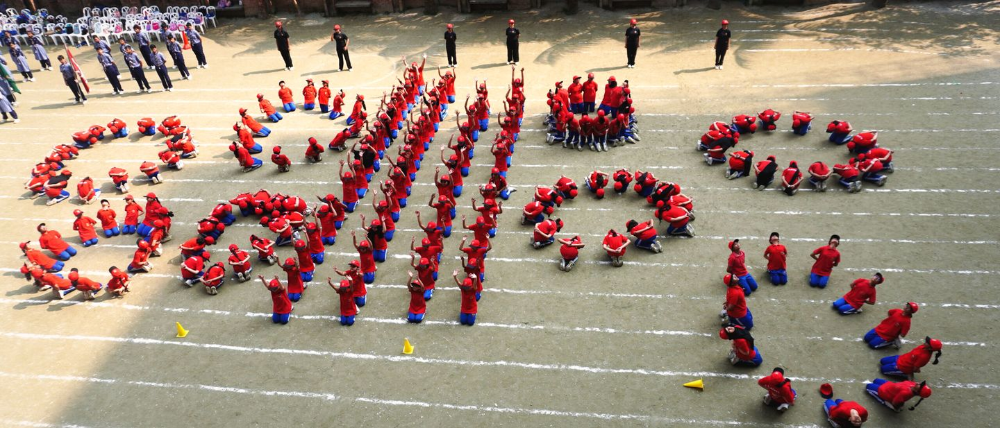
Six frames from the year.
A field of red at Sports Day, the hall on graduation night, a paper tiger for Pohela Boishakh, the astronaut on stage, a clay fort, a wall of red.

Every frame here is from the school's own albums. Select one to see it full screen.
Screened 2026-10-22: no child can be recognised in these frames.
Pick an album.
Twenty-one albums with photographs, newest first. Filter by kind or year.
Kind of album
Year
-

Annual Sports Day 2026: Class I to XII
5 photographs shown, 51 in the album
-

Graduation Ceremony 2025
3 photographs shown, 181 in the album
-

Pohela Boishakh 1432
4 photographs shown, 42 in the album
-
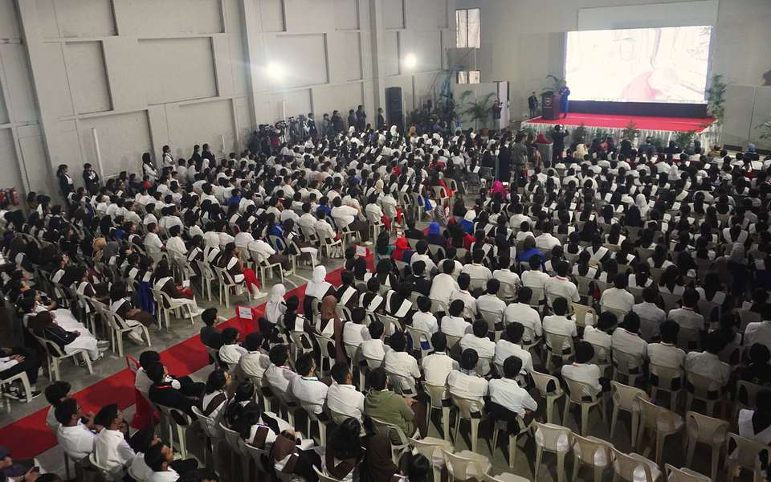
NASA astronaut Joseph M. Acaba's visit
6 photographs shown, 70 in the album
-

Annual Cultural Programme 2024
2 photographs shown, 58 in the album
-
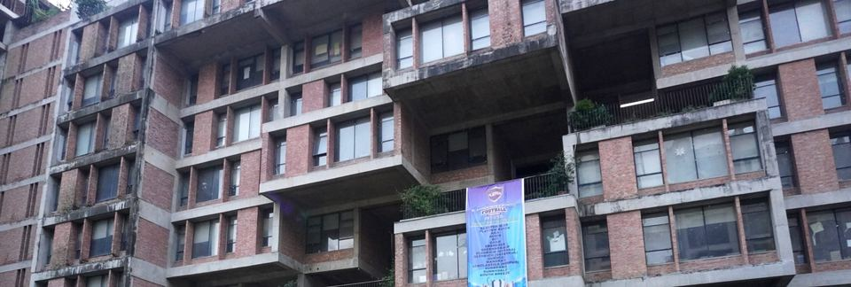
Playpen Inter-School Football Tournament (PIFT) 2024
1 photograph shown, 37 in the album
-
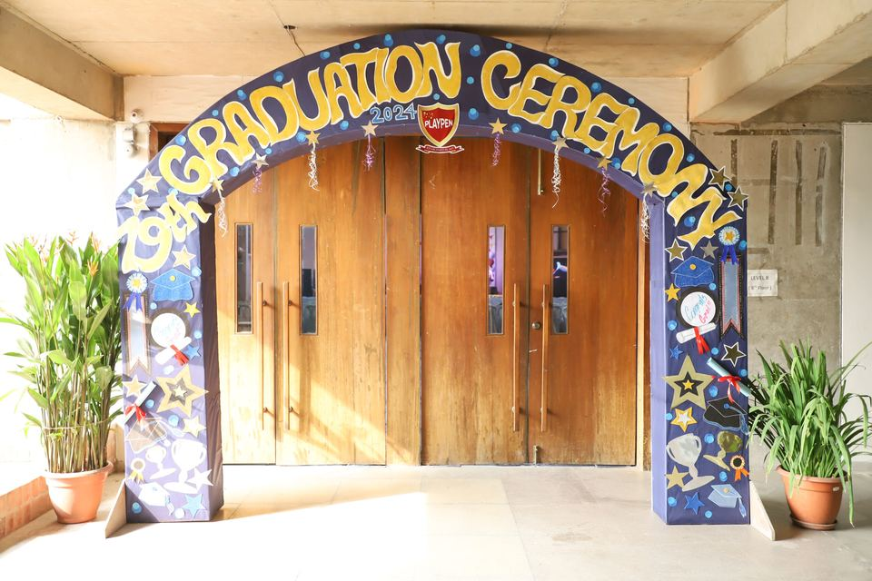
Graduation Ceremony 2024
4 photographs shown, 216 in the album
-

Annual Cultural Programme 2023
2 photographs shown, 99 in the album
-
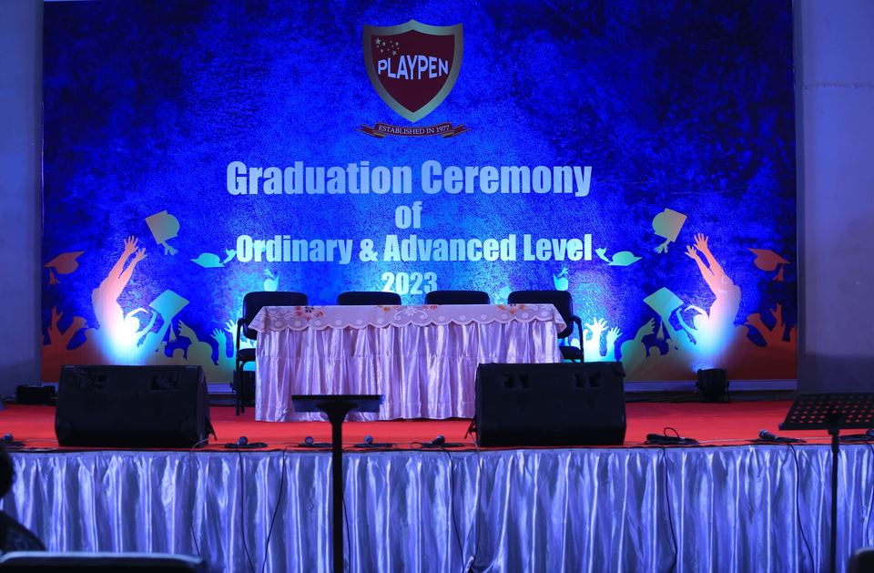
Graduation Ceremony 2023
3 photographs shown, 145 in the album
-
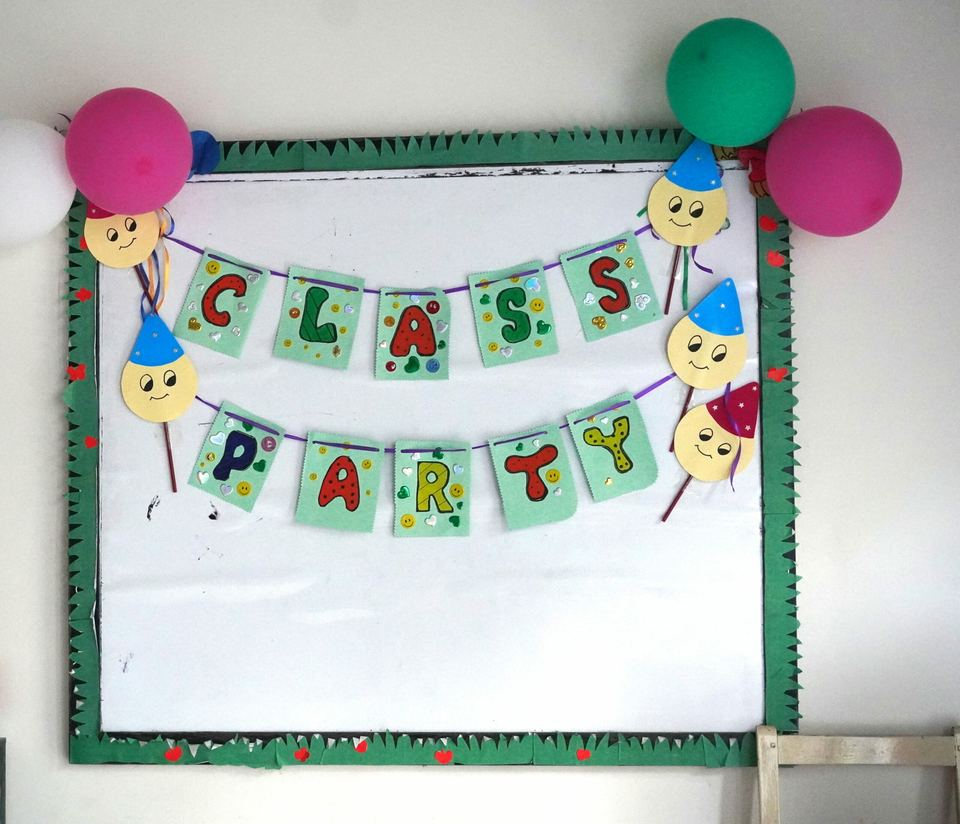
Class Party 2022 to 2023
2 photographs shown, 14 in the album
-
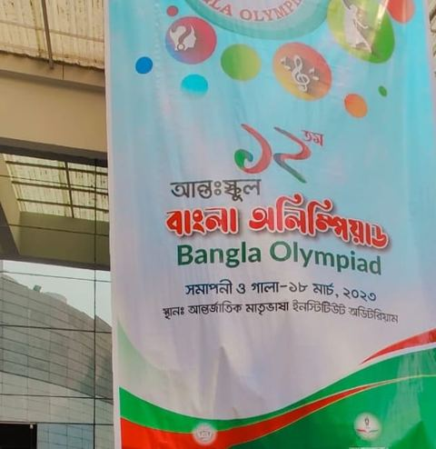
Bangla Olympiad
1 photograph shown, 5 in the album
-

Graduation Ceremony 2022
3 photographs shown, 195 in the album
-
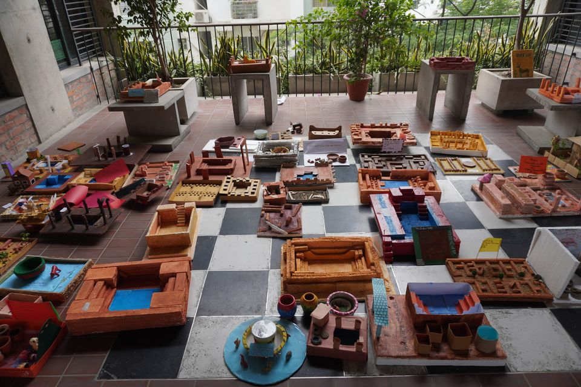
Art and Craft
8 photographs shown, 18 in the album
-
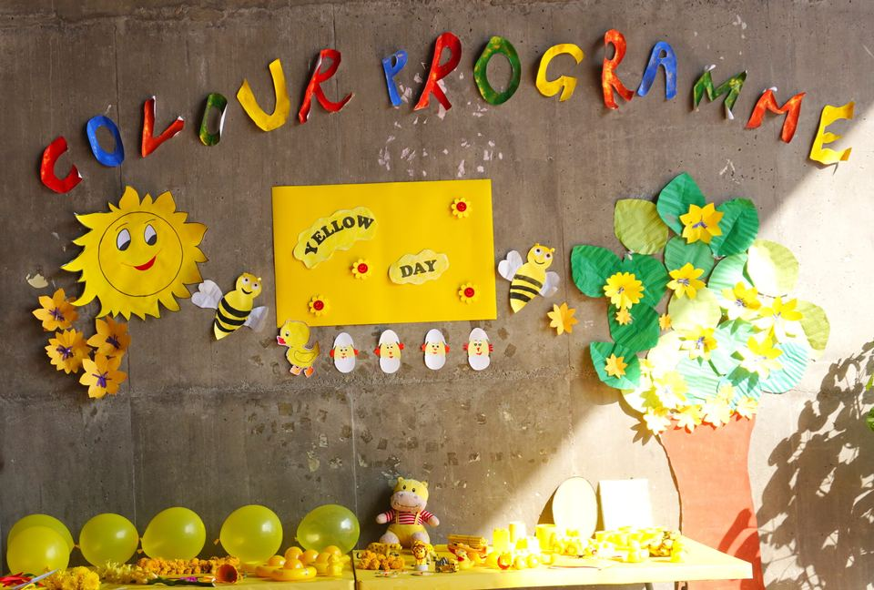
Colour Week
5 photographs shown, 10 in the album
-
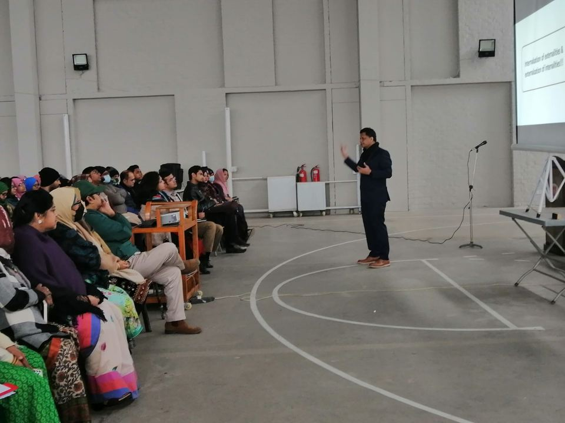
Teacher Training and Activities
3 photographs shown, 17 in the album
-
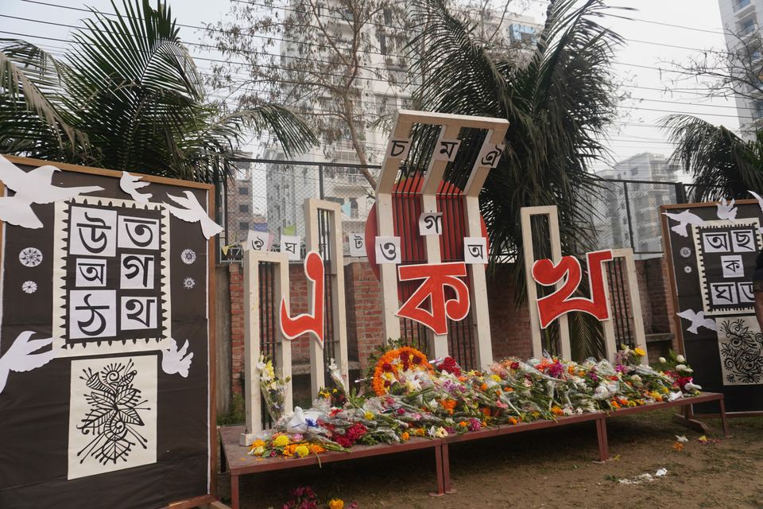
Ekushe February
1 photograph shown, 10 in the album
-
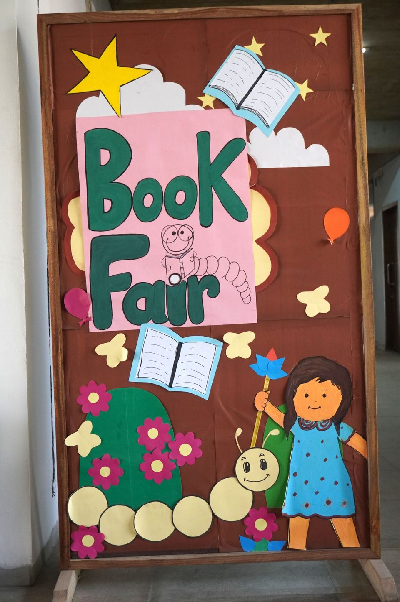
Book Fair
1 photograph shown, 10 in the album
-
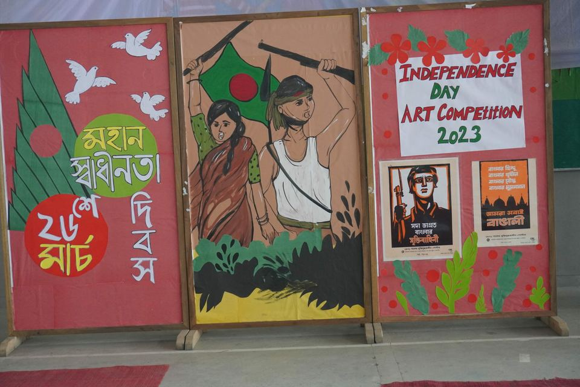
Independence Day Art Competition
1 photograph shown, 11 in the album
-
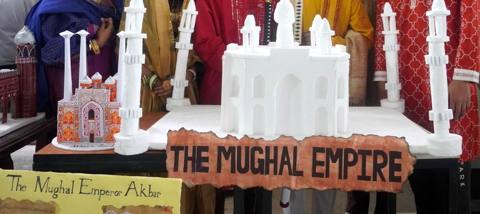
Education Fair
1 photograph shown, 12 in the album
-
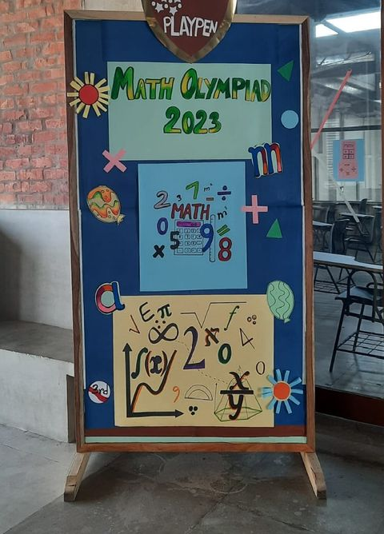
Mathematical Olympiad
1 photograph shown, 7 in the album
-
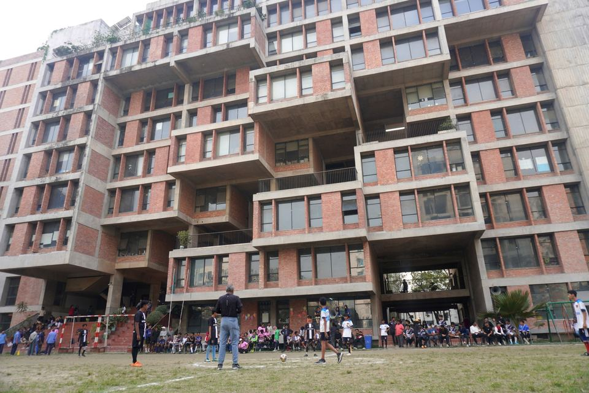
Inter-Class Football Tournament
1 photograph shown, 10 in the album
-
17 more albums, added when the school agrees
Every photograph in these albums shows children who can be recognised, or carries lettering the school must confirm first, so none is shown here yet. Each album has a page that says where its photographs are.
- Annual Sports Day 2026: Playgroup to KG II
- CIE Top Achievers 2025
- Science and Technology Fair 2024
- Class Party 2024
- ECA Cultural Competition
- Inter-School Football Tournament
- Extra-Curricular Activities
- Foundation Day celebration
- Study Tour
- Base Camp
- Visit to an Old Home
- Workshop for Students
- Sports
- Cultural Programme
- Science Fair
- Student Life
- Pitha Utshob 2024


No album matches that choice. Choose "All kinds" and "All years" to see them all.
The school's gallery holds 1,494 photographs across these 38 albums; 58 are shown here.
Counts from the school's Photo Gallery page, read 2026-10-22.
The building and its courtyards
The ten-storey brick building seen from the lawn, and the courtyards, terrace and atrium inside it.


The full walk up the building, floor by floor, is on the campus page.
The building, 2021 to 2024; not from an album.
About this gallery
Faces are added when the school agrees
This gallery shows crowds, formations, distant views, student work and the building. A photograph in which a child can be recognised goes on this website only with the school's written consent.
Every photograph of these albums is on the Photo Gallery page of the school's current websitecurrent site (opens in a new tab).
To ask for a photograph of your child to be taken down, call the school's further-queries line, 01755 515 885.
Admissions
Come and see the school.
Call the admissions line for your child's section between 9.00 am and 1.00 pm, or book a visit.